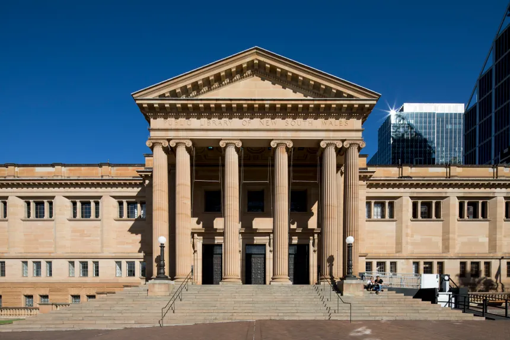
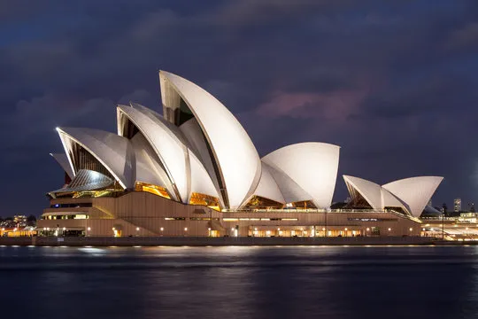
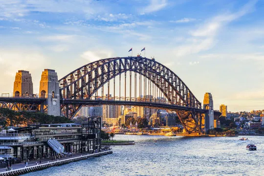
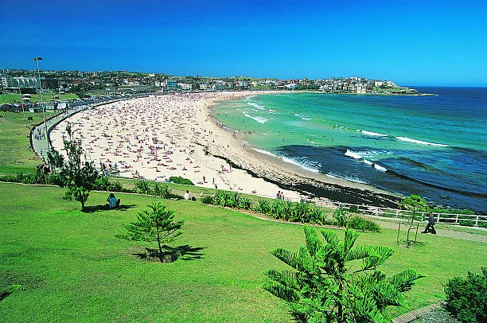

| first place | second place | ||
|---|---|---|---|
|  |
The State Library of New South Wales, also known as the Mitchell Library, is a significant heritage-listed library in Australia, established in 1869 with collections dating back to 1826... I like to study in a big library with a good atmosphere. |
 |
The Sydney Opera House is a multi-venue performing arts center in Sydney, Australia, and is widely regarded as one of the world's most famous and distinctive buildings... The night view of it from the ship is so beautiful and it is good place to take a picture. |
| third place | fourth place | ||
|  |
The Sydney Harbour Bridge is an iconic steel through arch bridge in Sydney, Australia, which spans Sydney Harbour and is known for its arch-based design, carrying various types of traffic, and being one of the tallest and widest long-span bridges in the world. When I walk on this bridge, I thought this place is good to jogging while organizing my thought. |
 |
Bondi Beach is a popular beach on the eastern coast of Sydney, Australia, and is a highly visited tourist destination known for being the setting of the TV series Bondi Rescue and Bondi Vet. I love Bondi Beach for its beautiful scenery, vibrant atmosphere, and the variety of activities it offers. |